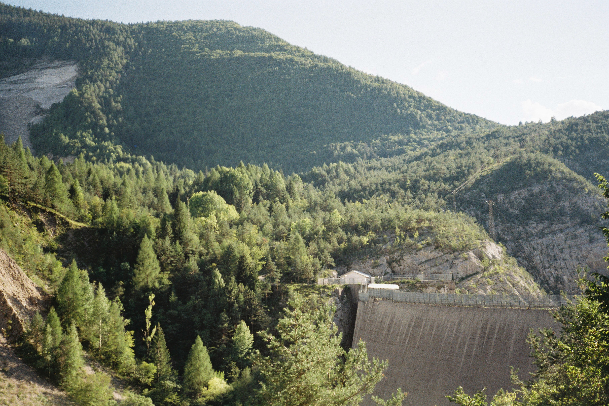
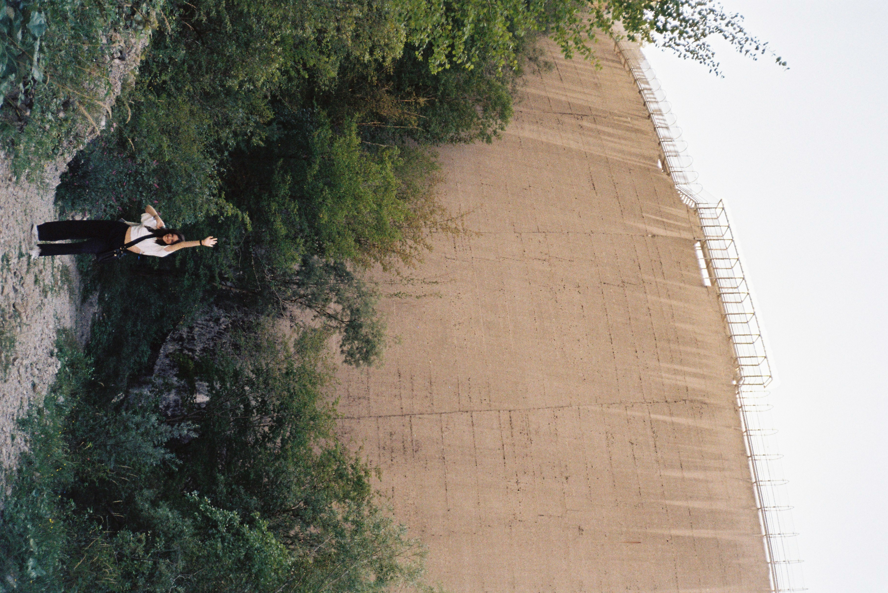

Photos

Santa Lucia di Piave (TV), Italy - Pentax Espio 738S - Kodak Gold 200

Santa Lucia di Piave (TV), Italy - Pentax Espio 738S - Kodak Gold 200

Santa Lucia di Piave (TV), Italy - Pentax Espio 738S - Kodak Gold 200

Santa Lucia di Piave (TV), Italy - Pentax Espio 738S - Kodak Gold 200

Bologna (BO), Italy - Pentax Espio 738S - Kodak Gold 200

Alpago (BL), Italy - Pentax Espio 738S - Kodak Gold 200

Alpago (BL), Italy - Pentax Espio 738S - Kodak Gold 200

Erto e Casso (PN), Italy – Canon Prima 5 – Kodak Gold 200

Erto e Casso (PN), Italy – Canon Prima 5 – Kodak Gold 200

Farra d'Alpago (BL), Italy – Canon Prima 5 – Kodak Gold 200

Venezia (VE), Italy – Canon Prima 5 – Kodak Gold 200

Treviso (TV), Italy – Canon Prima 5 – Kodak Gold 200

Possagno (TV), Italy – Canon Prima 5 – Kodak Gold 200

Susegana (TV), Italy – Canon Prima 5 – Kodak Gold 200